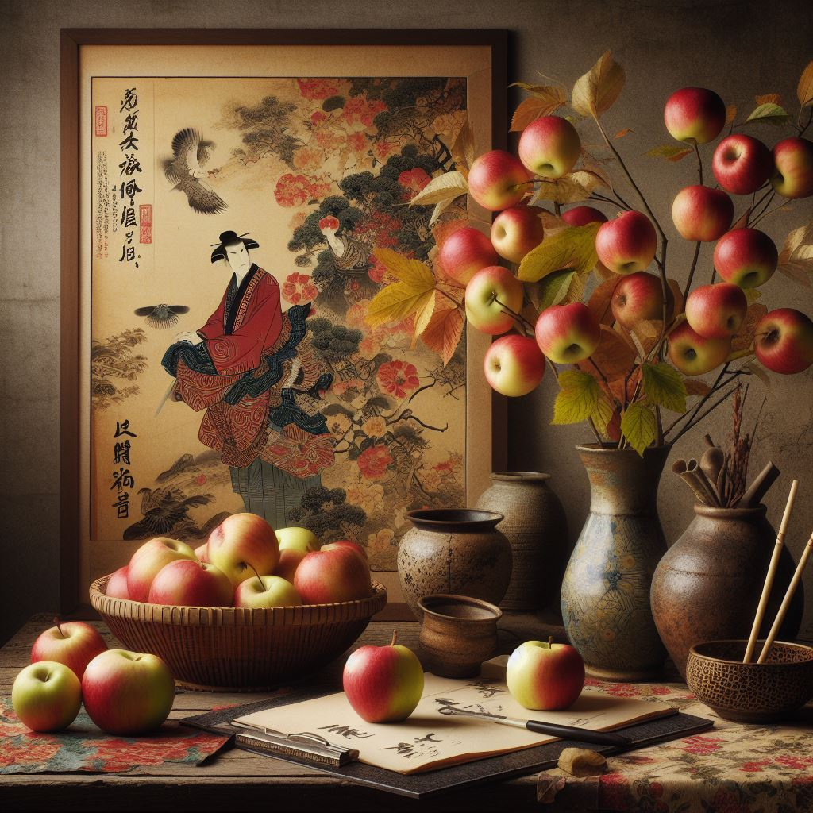

Pythonは、学校内の授業で基本的な内容を習得しています。
たとえば、Pythonで双対数を用いた多項式の自動微分の実装(課題05)
などを作成したことがあります。
HTML/CSSはこのページを作成するぐらいの知識があります。
GitHubは高専祭展示のためのゲーム開発にてチーム開発を行える程度に 扱うことができます。
C++はPython程度に扱うことができ、高専祭展示のオセロゲームはC++で作成しました。
高専祭で作成したプログラム
私が作成を担当したのは、画面遷移の実装、リザルト画面の実装、ランキング画面の実装、設定画面の実装。
また、授業でArduinoの基本的なプログラム、実際の電気回路の作成などを扱いました。
2023年12月にpythonでN重振り子の実装を行いました。 このプログラムは、N重振り子をPythonでシュミレーションを行うものです。具体的には、2重振り子の微分方程式を求めるのと同様に、 N個の質点に対して、速度を考えてあげて、オイラーラグランジュの方程式を適応し、微分方程式を得る。 その微分方程式に対して、scipyのodeintを用いて差分方程式だと思って、オイラーラグランジュの方程式を数値的に解きそれをmatplotlibで表示するものです。 numbaのjitというもので高速化？が行えるようで、貼り付けてみたら64重振り子までの動作は確認しましたが、それ以上は途端に厳しくなるみたいです。

3重振り子

10重振り子

64重振り子
2024年2月にpythonで制作時間は約8時間で
シャッフルパズルを作成しました。
このプログラムは、好きな画像でシャッフルパズルをすることができるプログラムです。具体的には、
実行すると、メインウィンドウが起動して、以下のようなメニュー画面が出てきます。
メニュー画面
文字通り「おわり」は終了ボタンです。「画像を選択」を押すと。画像を選択することができます。
このとき好きな画像で構わないですが、縦長の画像すぎる画像は気をつけてください。
また、画像のパスに日本語が含まれるとパスが文字化けし、画像を読み込むことができないので
読みパスがアルファベットであること、またファイル名がアルファベットであることに注意してください。
画像を読み込むと以下のようになります。(以下の画像はImage Creator from Designerで作成した。)
画像読み込み後
「もどる」ボタンを押すと最初のメニュー画面に戻ります。
さて、操作方法は、正方形分割された画像の黒でない正方形をダブルクリックすると、 ダブルクリックした正方形と黒の正方形が入れ替わります。元の画像に戻すことが目標のゲームです。
JavaScriptを用いた数値解析
たとえば、Pythonで双対数を用いた多項式の自動微分の実装(課題05)
などを作成したことがあります。
HTML/CSSはこのページを作成するぐらいの知識があります。
GitHubは高専祭展示のためのゲーム開発にてチーム開発を行える程度に 扱うことができます。
C++はPython程度に扱うことができ、高専祭展示のオセロゲームはC++で作成しました。
高専祭で作成したプログラム
私が作成を担当したのは、画面遷移の実装、リザルト画面の実装、ランキング画面の実装、設定画面の実装。
また、授業でArduinoの基本的なプログラム、実際の電気回路の作成などを扱いました。
2023年12月にpythonでN重振り子の実装を行いました。 このプログラムは、N重振り子をPythonでシュミレーションを行うものです。具体的には、2重振り子の微分方程式を求めるのと同様に、 N個の質点に対して、速度を考えてあげて、オイラーラグランジュの方程式を適応し、微分方程式を得る。 その微分方程式に対して、scipyのodeintを用いて差分方程式だと思って、オイラーラグランジュの方程式を数値的に解きそれをmatplotlibで表示するものです。 numbaのjitというもので高速化？が行えるようで、貼り付けてみたら64重振り子までの動作は確認しましたが、それ以上は途端に厳しくなるみたいです。
画像を読み込むと以下のようになります。(以下の画像はImage Creator from Designerで作成した。)

元画像
さて、操作方法は、正方形分割された画像の黒でない正方形をダブルクリックすると、 ダブルクリックした正方形と黒の正方形が入れ替わります。元の画像に戻すことが目標のゲームです。
JavaScriptを用いた数値解析